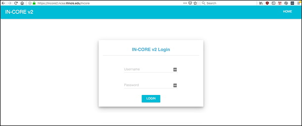
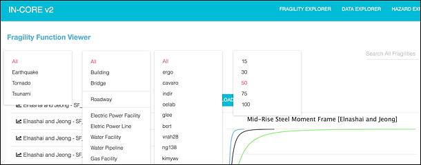

5. IN-CORE Web Tools¶
IN-CORE Web Tools are for interacting with the service layer. They enable users to browse and search the Datasets, Hazards and Fragilities, view the metadata and visualizations, and download the datasets.
The In-Core Web Tools are a dashboard with viewers for various services. Currently these are Fragility, Data and Hazard services. The dashboard can be accessed directly at https://incore2.ncsa.illinois.edu/incore/ and on IN-CORE Lab <incore_lab.html>_
This section shows how to access IN-CORE Web Tools and documentations on IN-CORE Lab.
A user must login with IN-CORE username and password in order to access the viewers:

This section shows how to access IN-CORE Web Tools and documentations on IN-CORE Lab.
5.1. Fragility service¶
This is an example of a viewer showing a selection list (left) of Fragility curves.

Hazards and types of structures are selected in the pull down menus. The data can be downloaded in json format.
